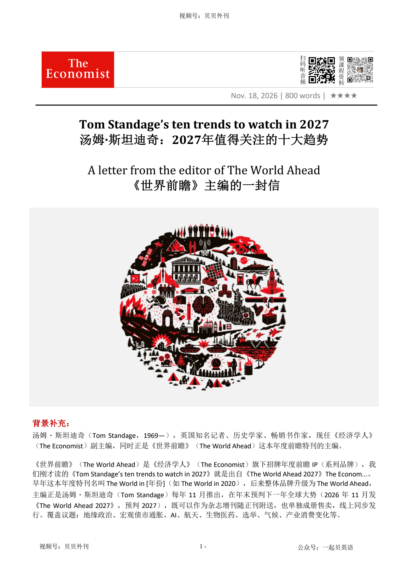

02 HEADLINE / 标题中英文解释
Tom Standage’s ten trends to watch in 2027
汤姆·斯坦迪奇：2027年值得关注的十大趋势
A letter from the editor of The World Ahead
《世界前瞻》主编的一封信

Tom Standage’s ten trends to watch in 2027
汤姆·斯坦迪奇：2027年值得关注的十大趋势
A letter from the editor of The World Ahead
《世界前瞻》主编的一封信
文章以现代生活越来越像科幻小说开篇，列出自动驾驶、失控的人工智能、人形机器人和减肥药等变化，随后提出2027年最值得关注的十个趋势。
第一组趋势集中在政治和战争：中期选举后美国将进入接班竞争，特朗普仍会努力维持影响力；伊朗战争则难有干净结局，并将继续影响能源、粮食和地区秩序。
第二组趋势关注气候与人工智能。
超级厄尔尼诺可能让2027年成为有记录以来最热的一年。
人工智能行业面临债务、网络攻击和供应链风险，但作者认为，大规模失业和数据中心耗尽能源等流行担忧，目前并没有足够数据支持。
欧洲政治和金融压力也会升高。
勒庞可能赢得法国总统大选，冲击法德合作并放大法国债务问题。
与此同时，政府挥霍、人工智能基础设施建设和能源通胀共同推高融资成本，债券市场的压力迟早会在某处引发断裂。
文章还讨论军事技术、减肥药和太空产业。
廉价技术让小国更有能力抵御大国；减肥药改变了消费习惯，也推动药企研究延寿疗法；SpaceX和中国火箭企业降低发射成本，为私人空间站乃至轨道数据中心创造条件。
最后，作者观察好莱坞经典系列回归，并借《星球大战》连接全文：廉价飞行器挑战军事强国、机器人自主行动、数据失窃造成灾难，这些科幻情节都越来越像现实。
文章的核心判断是，现实正在追上科幻，而2027年将是快速变化、充满不确定性的一年。
Modern life can feel like science fiction. Cars drive themselves, AI models act in surprising ways, robots look more human and new drugs help people lose weight.
The article introduces ten important trends to watch in 2027. The first trends concern politics and war.
After the US midterm elections, politicians will begin to compete to replace Donald Trump. The war with Iran will probably continue and affect energy, food and regional politics.
Climate and AI will also be important. A very strong El Niño may make 2027 the hottest year ever recorded.
AI companies may face debt problems, cyber-attacks and risks in their supply chains. However, the writer says there is not yet enough evidence that AI will cause huge job losses or use too much of the world's energy and water.
Europe may face political and financial trouble. Marine Le Pen could win the French presidential election, which would weaken cooperation between France and Germany.
Governments, AI companies and higher energy prices are all increasing the cost of borrowing. The writer believes that this pressure cannot continue forever.
Technology is changing war because smaller countries can use cheap tools to resist stronger enemies. Weight-loss drugs are changing how people spend money and are making drug companies interested in longer life.
Cheaper rockets may also create private space stations and even data centres in space. The article ends with Hollywood and Star Wars.
Stories about small aircraft defeating a military power, robots making their own choices and stolen data causing disaster now seem close to real life. The main message is that reality is catching up with science fiction, and 2027 will be exciting but uncertain.
2027十大前瞻（Para 1） ├─ 时代底色：现实逐步贴近科幻图景 └─ 核心主线：十大趋势值得重点关注 美国政坛变局（Para 2） ├─ 特朗普阶段：任期尾声持续发力、保留影响力 └─ 主线悬念：后特朗普时代的路线博弈 中东冲突余波（Para 3） ├─ 局势走向：伊朗冲突难快速平息 └─ 连锁影响：重塑地缘、能源与粮食格局 气候与能源走向（Para 4） ├─ 气候风险：2027或将再创高温纪录 └─ 转型契机：倒逼可再生能源加速普及 AI争议升温（Para 5） ├─ 风险焦点：债务、网络攻击、供应链隐患 └─ 舆论特点：不少担忧缺乏实证支撑 欧洲右翼与债市风险（Para 6-7） ├─ 欧洲政局：法国右翼有望胜选，冲击欧盟核心 └─ 债券压力：发达经济体融资成本持续走高 台悬念（Para 8） ├─ 战争新形态：小国依托技术制衡大国 └─ 局势风险：两年窗口期充满不确定性 新药与航天产业（Para 9-10） ├─ 减重药浪潮：改变消费习惯，带动长寿药研发 └─ 航天商业化：发射成本下行，催生太空新基建 文娱行业转向（Para 11） ├─ 好莱坞重启：经典IP集中回归 └─ 深层呼应：《星球大战》隐喻当下全球局势 收尾总结（Para 12） └─ 主旨：现实追上科幻，未来多变且充满未知
Modern life can feel like being in a sci-fi科幻小说 story. A rocket mogul大人物 who wants to put computers in space became the world’s first trillionaire. Drones have redefined重新定义 warfare战. Taxis drive themselves. Artificial-intelligence models are going rogue行为失常的. Humanoid robots are on the march在行军中. There are injections注射 that make you thinner and healthier—if you can afford them. All that is missing is the aliens. They probably won’t appear in 2027. But here are ten other things to watch out for.
现代生活有时恍若一部科幻小说：一位梦想将计算机送入太空的火箭大佬，成为了世界上首位万亿美元富豪；无人机彻底改写了战争的形态；出租车开始自行驾驶；人工智能模型正在失控；人形机器人正大举迈向；还有一些注射药物，既能帮助人们减重，又能改善健康——当然，前提是你负担得起。如今，似乎只差外星人登场了。不过，他们大概不会在2027年现身。但除此之外，还有十件事值得我们密切关注。
The post-Trump era. As the dust settles尘埃落定后 from the midterms, the race to succeed接替 Donald Trump will begin. But he won’t be a lame duck无实权的官 员或政府—more like a destructive引起破坏的 Angry Bird. Expect more executive orders, legal spats口角, sudden renamings, grandiose华而不实的 building projects and military adventures as he furiously拼命地 tries to retain his influence and shape his legacy遗产. Meanwhile, the world will start to wonder what a post-Trump America might look like. postprefix. /poʊst-/ Postis used to form words that indicate that something takes place after a particular date, period, or event. (
1. 后特朗普时代。随着中期选举的尘埃落定，围绕特朗普继任者的角逐将正式拉开帷幕。但特朗普绝不会就此成为一个跛脚鸭总统——他更像是一只破坏力十足的“愤怒的小鸟”。为了竭力维系自己的影响力、塑造自己的政治遗产，他势必推出更多行政命令，卷入更多法律纷争，突如其来地更名，大兴土木，甚至发动新的军事冒险。与此同时，世界也将开始思考：一个后特朗普时代的美国，究竟会是什么模样？
Aftershocks余波 from Iran. A clean-cut外表整洁的 resolution解决 to the conflict seems unlikely, so uncertainty will persist维持. But Mr Trump’s ill-advised不明智的 war has reduced America’s stature声望; its allies no longer trust it and its enemies no longer fear it. The war’s consequences will ripple扩散 throughout 2027, reshaping regional politics, reconfiguring重新配置 energy flows and threatening food security, with fertiliser肥料 in short supply. In Iran itself, the regime统治方式 will tighten its grip紧握.
2. 伊朗战争的余波。这场冲突恐怕难以迎来一个干净利落的结局，不确定性仍将持续。但特朗普这场考虑不周的战争，已经削弱了美国的国际地位：盟友不再信任它，敌人也不再畏惧它。战争的影响将在2027年持续扩散，重塑地区政治格局，改变全球能源流向，并对粮食安全构成威胁——届时化肥供应也将陷入短缺。至于伊朗国内，现政权则会进一步收紧控制。
Hottest year ever, again. 2027 is expected to be the hottest year on record. A “super El Niño厄尔尼诺现象” will offer a preview预先观看 of the warmer, more volatile易变的 future that awaits, with more droughts久旱, heatwaves, wildfires and extreme weather, unless emissions发出 are cut quickly. But Mr Trump has unwittingly become the world’s greatest salesman for renewable energy. It’s the best way not just to address设法解决 climate change, but to escape from the ups and downs起起落落 of global energy markets.
3. 史上最热之年，再度刷新。预计2027年将再度刷新全球有记录以来的最高气温纪录。一次“超级厄尔尼诺”现象，将让我们提前窥见一个更加炎热、气候波动更加剧烈的未来：干旱、热浪、野火以及极端天气将愈发频繁，除非能够迅速削减温室气体排放。但颇具讽刺意味的是，特朗普无意间成了全球最大的可再生能源推销员。可再生能源不仅是应对气候变化的最佳途径，也是摆脱全球能源市场剧烈起伏的最佳选择。
The AI backlash强烈抵制 grows. The risks of AI are under scrutiny. The danger of a crash will rise as AI firms take on承担 more debt in complex, opaque不透明的 deals. Whatever happens in markets, more capable models will power a spate一连串 of cyber-attacks. Companies and governments will worry about political risks to AI supply chains. But concerns about job losses, or the energy and water use of data centres, are not backed by data. The backlash reflects fears over imagined impacts, not real ones. It may be 50 years old, but “Star Wars” seems more relevant相关的 than ever in 2027. 4.
4. 针对人工智能的反噬浪潮。人工智能带来的风险正受到越来越严格的审视。随着人工智能企业通过复杂而不透明的交易安排承担越来越多债务，市场崩盘的风险也将随之上升。无论金融市场最终走向何方，能力更强的人工智能模型都将催生一波网络攻击浪潮。企业和政府也会越来越担忧人工智能供应链所面临的地缘政治风险。然而，关于人工智能将导致大规模失业，或数据中心会消耗过多能源和水资源的担忧，却缺乏数据支持。这场反弹所折射的，是想象中后果，而非真实隐忧。《星球大战》问世至今已有50年，但在2027年，它似乎比以往任何时候都更切合现实。
Europe’s populist right. Right-wing populism has been on the rise正在上升 around the world for some time. But in 2027 all eyes will be on所有人的目光都将聚焦于…… France, where Marine Le Pen of the populist-right National Rally has a good chance of winning the presidency. That would throw a spanner into给……制造麻烦 the Franco- German engine that powers the European Union—and heighten加剧 concerns about debt- laden France’s precarious不稳的 public finances. populist n.adj. /ˈpɑːpjəlɪst/ a politician who claims to represent the interests and opinions of ordinary people, especially in opposition to established elites The populist gained support by promising to stand up for ordinary working people.
5. 欧洲右翼民粹主义。右翼民粹主义在世界各地持续抬头。但到了2027年，全球目光都将聚焦法国。来自右翼民粹主义政党国民联盟的玛丽娜·勒庞，很有希望赢得法国总统大选。如果这一幕成为现实，欧盟赖以运转的法德引擎将遭受重创，也将进一步加剧外界对法国公共财政脆弱处境的担忧——这个国家早已背负沉重债务。
Bond-market pressure. But it’s not just France that has the bond markets on edge紧张不安的. Fiscal财政的 profligacy挥霍, the AI construction boom and renewed inflation (from higher energy prices) are raising governments’ borrowing costs across the rich world. Higher rates are squeezing严格限制 companies and households, too. This can’t go on for ever. Something, somewhere, has to break.
6. 债券市场施压。但令债券市场神经紧绷的，并不只有法国。财政挥霍无度、人工智能基础设施建设热潮，以及能源价格上涨引发的新一轮通胀，正在推高发达经济体的融资成本。更高的利率也在挤压企业和家庭的生存空间。这样的局面不可能永远持续下去。总有某个地方、某个环节，将出现断裂。
TW’s deadline. Technology has changed the nature of war, making it easier for smaller powers to fend off larger ones, as seen in Ukraine and Iran. What does that mean for China’s designs打算? 6.
7. XX倒计时。技术正在改变战争的性质，使较弱小的国家也更容易抵御强大的对手——乌克兰和伊朗的经历已经证明了这一点。那么，这对C的战略意图意味着什么？美国如今自顾不暇。C会选择采取行动，还是等待2028年选举的结果？未来两年，局势都将充满危险。
The Ozempic奥泽匹克 effect. As well as helping people lose weight, slimming减肥 drugs are changing consumer behaviour, 7. XX as the newly slender苗条的, granted同意 a new lease of life重获新生, engage in “revenge报复 shopping”, splurging挥霍 on clothes, cosmetics and fitness. The drugs’ success has also rejuvenated使恢复活力 interest among pharmaceutical制药的 companies in therapies to boost longevity长寿.
8. “司美格鲁肽效应”。减肥药不仅帮助人们减轻体重，也正在改变消费者的行为方式。那些身形变得苗条、仿佛重获新生的人，开始掀起一股所谓的“报复性消费”热潮，在服装、化妆品和健身领域大手笔花钱。与此同时，减肥药的巨大成功，也重新点燃了制药企业对延长人类寿命疗法的兴趣。
Cheaper space launch. SpaceX’s huge Starship will start making regular satellite人造卫星 launches. Chinese rocketry firms will demonstrate reuse of boosters. Cheaper launch will pave the way for为……铺平道路 private space stations and, yes, building data centres in orbit轨道, which may not be as crazy as it seems.
9. 太空发射成本进一步下降。SpaceX庞大的星舰将开始定期执行卫星发射任务。中国的火箭企业也将展示助推器回收复用技术。发射成本的下降，将为私人空间站铺平道路；没错，还将为在轨道上建设数据中心创造条件。而这一设想，或许并不像听起来那么疯狂。
Rebooting重新启动 Hollywood. “Star Wars” is re-released for its 50th anniversary, and a new film aims to reboot the franchise特许经营权. The Avengers return, again, and a new James Bond is on the way即将到来. Given the success of low-budget movies made by YouTubers, though, do audiences want something new? Perhaps. Yet with its depiction描绘 of a military superpower humbled使受挫 by small, cheap craft飞行器, misbehaving行为不当 droids机器人 with their own agendas议程表, and its warning of the consequences of lax不严格的 security and stolen data, “Star Wars” may be more relevant than ever in 2027.
10. 好莱坞重启经典。适逢上映五十周年，《星球大战》将重返大银幕，一部全新力作也试图重启这一经典系列；《复仇者联盟》再度回归，而新一任詹姆斯·邦德也即将登场。不过，由YouTube创作者制作的低成本电影已经取得成功，观众是否还渴望新鲜的故事？或许是吧。然而，《星球大战》所呈现的种种情节：一个军事超级大国被小型、廉价的飞行器逼入窘境；机器人拥有了自己的意志，开始不听指挥；而安全防线的松懈与数据失窃，则带来了难以估量的后果，这一切或许会让它在2027年显得比以往任何时候都更加切合现实。
It seems reality has caught up with sci-fi. We hope you will find The World Ahead 2027 to be a helpful and entertaining guide to this fast-moving, uncertain future. ■
现实似乎已经追上了科幻。我们希望，《世界前瞻2027》能够成为一份既实用又引人入胜的指南，帮助你读懂这个瞬息万变、充满不确定性的未来。■
科幻小说；科幻作品
short for science fiction; a genre of stories based on imagined scientific or technological developments, often set in the future
The film feels like something straight out of a sci-fi movie. 这部电影简直就像直接从一部科幻电影里搬出来的一样。
Modern life can feel like being in a sci-fi story.
现代生活有时恍若一部科幻小说：一位梦想将计算机送入太空的火箭大佬，成为了世界上首位万亿美元富豪；无人机彻底改写了战争的形态；出租车开始自行驾驶；人工智能模型正在失控；人形机器人正大举迈向；还有一些注射药物，既能帮助人们减重，又能改善健康——当然，前提是你负担得起。如今，似乎只差外星人登场了。不过，他们大概不会在2027年现身。但除此之外，还有十件事值得我们密切关注。
(尤指新闻、影视界的)大人物; 大亨
A mogul is an important, rich, and powerful businessman, especially one in the news, film, or television industry.
...an international media mogul. ...一位国际传媒大亨。
A rocket mogul who wants to put computers in space became the world’s first trillionaire.
现代生活有时恍若一部科幻小说：一位梦想将计算机送入太空的火箭大佬，成为了世界上首位万亿美元富豪；无人机彻底改写了战争的形态；出租车开始自行驾驶；人工智能模型正在失控；人形机器人正大举迈向；还有一些注射药物，既能帮助人们减重，又能改善健康——当然，前提是你负担得起。如今，似乎只差外星人登场了。不过，他们大概不会在2027年现身。但除此之外，还有十件事值得我们密切关注。
重新定义
If you redefine something, you cause people to consider it in a new way.
Feminists have redefined the role of women. 女权主义者们已重新定义了女性角色。
Drones have redefined warfare.
现代生活有时恍若一部科幻小说：一位梦想将计算机送入太空的火箭大佬，成为了世界上首位万亿美元富豪；无人机彻底改写了战争的形态；出租车开始自行驾驶；人工智能模型正在失控；人形机器人正大举迈向；还有一些注射药物，既能帮助人们减重，又能改善健康——当然，前提是你负担得起。如今，似乎只差外星人登场了。不过，他们大概不会在2027年现身。但除此之外，还有十件事值得我们密切关注。
战；作战；战争
the activity of fighting a war, especially using particular weapons or methods
air/naval/guerrilla, etc. warfare 空战、海战、游击战等
Drones have redefined warfare.
现代生活有时恍若一部科幻小说：一位梦想将计算机送入太空的火箭大佬，成为了世界上首位万亿美元富豪；无人机彻底改写了战争的形态；出租车开始自行驾驶；人工智能模型正在失控；人形机器人正大举迈向；还有一些注射药物，既能帮助人们减重，又能改善健康——当然，前提是你负担得起。如今，似乎只差外星人登场了。不过，他们大概不会在2027年现身。但除此之外，还有十件事值得我们密切关注。
行为失常的；不受控制的
behaving unpredictably or dangerously outside normal control
AI models may go rogue. 人工智能模型可能会失控。
Artificial-intelligence models are going rogue.
现代生活有时恍若一部科幻小说：一位梦想将计算机送入太空的火箭大佬，成为了世界上首位万亿美元富豪；无人机彻底改写了战争的形态；出租车开始自行驾驶；人工智能模型正在失控；人形机器人正大举迈向；还有一些注射药物，既能帮助人们减重，又能改善健康——当然，前提是你负担得起。如今，似乎只差外星人登场了。不过，他们大概不会在2027年现身。但除此之外，还有十件事值得我们密切关注。
注射
an act of injecting sb with a drug or other substance
to give sb an injection 给某人打针
There are injections that make you thinner and healthier—if you can afford them.
现代生活有时恍若一部科幻小说：一位梦想将计算机送入太空的火箭大佬，成为了世界上首位万亿美元富豪；无人机彻底改写了战争的形态；出租车开始自行驾驶；人工智能模型正在失控；人形机器人正大举迈向；还有一些注射药物，既能帮助人们减重，又能改善健康——当然，前提是你负担得起。如今，似乎只差外星人登场了。不过，他们大概不会在2027年现身。但除此之外，还有十件事值得我们密切关注。
尘埃落定后；局势平息后；混乱过后
after a confusing, chaotic or disruptive situation has ended and things have become clearer
As the dust settles, the full impact of the decision will become clear.
As the dust settles from the midterms, the race to succeed Donald Trump will begin.
1. 后特朗普时代。随着中期选举的尘埃落定，围绕特朗普继任者的角逐将正式拉开帷幕。但特朗普绝不会就此成为一个跛脚鸭总统——他更像是一只破坏力十足的“愤怒的小鸟”。为了竭力维系自己的影响力、塑造自己的政治遗产，他势必推出更多行政命令，卷入更多法律纷争，突如其来地更名，大兴土木，甚至发动新的军事冒险。与此同时，世界也将开始思考：一个后特朗普时代的美国，究竟会是什么模样？
接替；继任；随后出现
to come next after sb/sth and take their/its place or position
Who succeeded him as President? 接替他担任总统的是谁？
As the dust settles from the midterms, the race to succeed Donald Trump will begin.
1. 后特朗普时代。随着中期选举的尘埃落定，围绕特朗普继任者的角逐将正式拉开帷幕。但特朗普绝不会就此成为一个跛脚鸭总统——他更像是一只破坏力十足的“愤怒的小鸟”。为了竭力维系自己的影响力、塑造自己的政治遗产，他势必推出更多行政命令，卷入更多法律纷争，突如其来地更名，大兴土木，甚至发动新的军事冒险。与此同时，世界也将开始思考：一个后特朗普时代的美国，究竟会是什么模样？
引起破坏（或毁灭）的；破坏（或毁灭）性的
causing destruction or damage
the destructive power of modern weapons现代武器的毁灭性力量
But he won’t be a lame duck—more like a destructive Angry Bird.
1. 后特朗普时代。随着中期选举的尘埃落定，围绕特朗普继任者的角逐将正式拉开帷幕。但特朗普绝不会就此成为一个跛脚鸭总统——他更像是一只破坏力十足的“愤怒的小鸟”。为了竭力维系自己的影响力、塑造自己的政治遗产，他势必推出更多行政命令，卷入更多法律纷争，突如其来地更名，大兴土木，甚至发动新的军事冒险。与此同时，世界也将开始思考：一个后特朗普时代的美国，究竟会是什么模样？
口角；争吵；小争执
a short, often angry argument or disagreement between people
The two politicians had a public spat over the proposed tax reforms. 两位政治人物因拟议中的税收改革公开发生了争执。
Expect more executive orders, legal spats, sudden renamings, grandiose building projects and military adventures as he furiously tries to retain his influence and shape his legacy.
1. 后特朗普时代。随着中期选举的尘埃落定，围绕特朗普继任者的角逐将正式拉开帷幕。但特朗普绝不会就此成为一个跛脚鸭总统——他更像是一只破坏力十足的“愤怒的小鸟”。为了竭力维系自己的影响力、塑造自己的政治遗产，他势必推出更多行政命令，卷入更多法律纷争，突如其来地更名，大兴土木，甚至发动新的军事冒险。与此同时，世界也将开始思考：一个后特朗普时代的美国，究竟会是什么模样？
重新命名；改名；更名
to give someone or something a new name
The company plans to rename its flagship product next year. 该公司计划明年为其旗舰产品更名。
华而不实的；浮夸的；不切实际的
seeming very impressive but too large, complicated, expensive, etc. to be practical or possible
The grandiose scheme for a journey across the desert came to nothing. 不切实际的穿越沙漠计划已成泡影。
Expect more executive orders, legal spats, sudden renamings, grandiose building projects and military adventures as he furiously tries to retain his influence and shape his legacy.
1. 后特朗普时代。随着中期选举的尘埃落定，围绕特朗普继任者的角逐将正式拉开帷幕。但特朗普绝不会就此成为一个跛脚鸭总统——他更像是一只破坏力十足的“愤怒的小鸟”。为了竭力维系自己的影响力、塑造自己的政治遗产，他势必推出更多行政命令，卷入更多法律纷争，突如其来地更名，大兴土木，甚至发动新的军事冒险。与此同时，世界也将开始思考：一个后特朗普时代的美国，究竟会是什么模样？
拼命地；迅速而激烈地
with great speed, energy or effort
He worked furiously to retain his influence. 他拼命维持自己的影响力。
Expect more executive orders, legal spats, sudden renamings, grandiose building projects and military adventures as he furiously tries to retain his influence and shape his legacy.
1. 后特朗普时代。随着中期选举的尘埃落定，围绕特朗普继任者的角逐将正式拉开帷幕。但特朗普绝不会就此成为一个跛脚鸭总统——他更像是一只破坏力十足的“愤怒的小鸟”。为了竭力维系自己的影响力、塑造自己的政治遗产，他势必推出更多行政命令，卷入更多法律纷争，突如其来地更名，大兴土木，甚至发动新的军事冒险。与此同时，世界也将开始思考：一个后特朗普时代的美国，究竟会是什么模样？
遗产
1. A legacy is money or property which someone leaves to you when they die.
You could make a real difference to someone's life by leaving them a generous legacy.
Expect more executive orders, legal spats, sudden renamings, grandiose building projects and military adventures as he furiously tries to retain his influence and shape his legacy.
1. 后特朗普时代。随着中期选举的尘埃落定，围绕特朗普继任者的角逐将正式拉开帷幕。但特朗普绝不会就此成为一个跛脚鸭总统——他更像是一只破坏力十足的“愤怒的小鸟”。为了竭力维系自己的影响力、塑造自己的政治遗产，他势必推出更多行政命令，卷入更多法律纷争，突如其来地更名，大兴土木，甚至发动新的军事冒险。与此同时，世界也将开始思考：一个后特朗普时代的美国，究竟会是什么模样？
余波；后续影响
a continuing effect of an important or damaging event
The aftershocks of the war will continue in 2027. 战争的余波将在2027年持续。
Aftershocks from Iran.
2. 伊朗战争的余波。这场冲突恐怕难以迎来一个干净利落的结局，不确定性仍将持续。但特朗普这场考虑不周的战争，已经削弱了美国的国际地位：盟友不再信任它，敌人也不再畏惧它。战争的影响将在2027年持续扩散，重塑地区政治格局，改变全球能源流向，并对粮食安全构成威胁——届时化肥供应也将陷入短缺。至于伊朗国内，现政权则会进一步收紧控制。
（问题、分歧等的）解决，消除
the act of solving or settling a problem, disagreement, etc.
The government is pressing for an early resolution of the dispute.
A clean-cut resolution to the conflict seems unlikely, so uncertainty will persist.
2. 伊朗战争的余波。这场冲突恐怕难以迎来一个干净利落的结局，不确定性仍将持续。但特朗普这场考虑不周的战争，已经削弱了美国的国际地位：盟友不再信任它，敌人也不再畏惧它。战争的影响将在2027年持续扩散，重塑地区政治格局，改变全球能源流向，并对粮食安全构成威胁——届时化肥供应也将陷入短缺。至于伊朗国内，现政权则会进一步收紧控制。
维持；保持；持续存在
to continue to exist
If the symptoms persist, consult your doctor.如果症状持续不消除，就得去看医生。
A clean-cut resolution to the conflict seems unlikely, so uncertainty will persist.
2. 伊朗战争的余波。这场冲突恐怕难以迎来一个干净利落的结局，不确定性仍将持续。但特朗普这场考虑不周的战争，已经削弱了美国的国际地位：盟友不再信任它，敌人也不再畏惧它。战争的影响将在2027年持续扩散，重塑地区政治格局，改变全球能源流向，并对粮食安全构成威胁——届时化肥供应也将陷入短缺。至于伊朗国内，现政权则会进一步收紧控制。
声望；名望
the importance and respect that a person has because of their ability and achievements
an actress of considerable stature颇有名望的女演员
But Mr Trump’s ill-advised war has reduced America’s stature; its allies no longer trust it and its enemies no longer fear it.
2. 伊朗战争的余波。这场冲突恐怕难以迎来一个干净利落的结局，不确定性仍将持续。但特朗普这场考虑不周的战争，已经削弱了美国的国际地位：盟友不再信任它，敌人也不再畏惧它。战争的影响将在2027年持续扩散，重塑地区政治格局，改变全球能源流向，并对粮食安全构成威胁——届时化肥供应也将陷入短缺。至于伊朗国内，现政权则会进一步收紧控制。
扩散；产生连锁影响
to spread through a group or situation like a wave
The sea rippled and sparkled.大海波光粼粼。 2. to spread through a person or a group of people like a wave扩散；涌起
The war’s consequences will ripple throughout 2027, reshaping regional politics, reconfiguring energy flows and threatening food security, with fertiliser in short supply.
2. 伊朗战争的余波。这场冲突恐怕难以迎来一个干净利落的结局，不确定性仍将持续。但特朗普这场考虑不周的战争，已经削弱了美国的国际地位：盟友不再信任它，敌人也不再畏惧它。战争的影响将在2027年持续扩散，重塑地区政治格局，改变全球能源流向，并对粮食安全构成威胁——届时化肥供应也将陷入短缺。至于伊朗国内，现政权则会进一步收紧控制。
重新配置（计算机设备等）；重新设定（程序等）
to make changes to the way that sth is arranged to work, especially computer equipment or a program
You may need to reconfigure the firewall if you add a new machine to your network. 如果在网络中增加新计算机，可能就得重新设定防火墙。
The war’s consequences will ripple throughout 2027, reshaping regional politics, reconfiguring energy flows and threatening food security, with fertiliser in short supply.
2. 伊朗战争的余波。这场冲突恐怕难以迎来一个干净利落的结局，不确定性仍将持续。但特朗普这场考虑不周的战争，已经削弱了美国的国际地位：盟友不再信任它，敌人也不再畏惧它。战争的影响将在2027年持续扩散，重塑地区政治格局，改变全球能源流向，并对粮食安全构成威胁——届时化肥供应也将陷入短缺。至于伊朗国内，现政权则会进一步收紧控制。
肥料；化肥
a natural or chemical substance added to soil to help plants grow
Farmers use fertiliser to improve soil quality and increase crop yields. 农民使用肥料改善土壤质量，提高农作物产量。
The war’s consequences will ripple throughout 2027, reshaping regional politics, reconfiguring energy flows and threatening food security, with fertiliser in short supply.
2. 伊朗战争的余波。这场冲突恐怕难以迎来一个干净利落的结局，不确定性仍将持续。但特朗普这场考虑不周的战争，已经削弱了美国的国际地位：盟友不再信任它，敌人也不再畏惧它。战争的影响将在2027年持续扩散，重塑地区政治格局，改变全球能源流向，并对粮食安全构成威胁——届时化肥供应也将陷入短缺。至于伊朗国内，现政权则会进一步收紧控制。
（尤指未通 过公正选举的）统治方式，统治制度，政权，政体
a method or system of government, especially one that has not been elected in a fair way
a fascist/totalitarian/military, etc. regime 法西斯、极权主义、军事等政权
In Iran itself, the regime will tighten its grip.
2. 伊朗战争的余波。这场冲突恐怕难以迎来一个干净利落的结局，不确定性仍将持续。但特朗普这场考虑不周的战争，已经削弱了美国的国际地位：盟友不再信任它，敌人也不再畏惧它。战争的影响将在2027年持续扩散，重塑地区政治格局，改变全球能源流向，并对粮食安全构成威胁——届时化肥供应也将陷入短缺。至于伊朗国内，现政权则会进一步收紧控制。
紧握；紧抓
1. an act of holding sb/sth tightly; a particular way of doing this
Keep a tight grip on the rope.紧紧抓住绳索不放。
In Iran itself, the regime will tighten its grip.
2. 伊朗战争的余波。这场冲突恐怕难以迎来一个干净利落的结局，不确定性仍将持续。但特朗普这场考虑不周的战争，已经削弱了美国的国际地位：盟友不再信任它，敌人也不再畏惧它。战争的影响将在2027年持续扩散，重塑地区政治格局，改变全球能源流向，并对粮食安全构成威胁——届时化肥供应也将陷入短缺。至于伊朗国内，现政权则会进一步收紧控制。
厄尔尼诺现象；指赤道中东太平 洋海表温度异常升高，并对全球天气和气候产生影响的气候现象
a climate pattern involving the unusual warming of surface waters in the central and eastern tropical Pacific Ocean, which can affect weather patterns around the world
El Niño can bring heavy rainfall to some regions while causing droughts in others. 厄尔尼诺现象可能导致一些地区出现强降雨，而另一些地区则遭遇干旱。
A “super El Niño” will offer a preview of the warmer, more volatile future that awaits, with more droughts, heatwaves, wildfires and extreme weather, unless emissions are cut quickly.
3. 史上最热之年，再度刷新。预计2027年将再度刷新全球有记录以来的最高气温纪录。一次“超级厄尔尼诺”现象，将让我们提前窥见一个更加炎热、气候波动更加剧烈的未来：干旱、热浪、野火以及极端天气将愈发频繁，除非能够迅速削减温室气体排放。但颇具讽刺意味的是，特朗普无意间成了全球最大的可再生能源推销员。可再生能源不仅是应对气候变化的最佳途径，也是摆脱全球能源市场剧烈起伏的最佳选择。
预先观看
A preview is an opportunity to see something such as a movie, exhibition, or invention before it is open or available to the public.
He had gone to see the preview of a play. 他去看过一出戏的预演。
A “super El Niño” will offer a preview of the warmer, more volatile future that awaits, with more droughts, heatwaves, wildfires and extreme weather, unless emissions are cut quickly.
3. 史上最热之年，再度刷新。预计2027年将再度刷新全球有记录以来的最高气温纪录。一次“超级厄尔尼诺”现象，将让我们提前窥见一个更加炎热、气候波动更加剧烈的未来：干旱、热浪、野火以及极端天气将愈发频繁，除非能够迅速削减温室气体排放。但颇具讽刺意味的是，特朗普无意间成了全球最大的可再生能源推销员。可再生能源不仅是应对气候变化的最佳途径，也是摆脱全球能源市场剧烈起伏的最佳选择。
易变的；无定性的；无常性的
1. changing easily from one mood to another
a highly volatile personality反复无常的个性 2. likely to change suddenly; easily becoming dangerous可能急剧波动的；不稳定的；易恶化的
A “super El Niño” will offer a preview of the warmer, more volatile future that awaits, with more droughts, heatwaves, wildfires and extreme weather, unless emissions are cut quickly.
3. 史上最热之年，再度刷新。预计2027年将再度刷新全球有记录以来的最高气温纪录。一次“超级厄尔尼诺”现象，将让我们提前窥见一个更加炎热、气候波动更加剧烈的未来：干旱、热浪、野火以及极端天气将愈发频繁，除非能够迅速削减温室气体排放。但颇具讽刺意味的是，特朗普无意间成了全球最大的可再生能源推销员。可再生能源不仅是应对气候变化的最佳途径，也是摆脱全球能源市场剧烈起伏的最佳选择。
久旱；旱灾
a long period of time when there is little or no rain
two years of severe drought两年的严重旱灾
A “super El Niño” will offer a preview of the warmer, more volatile future that awaits, with more droughts, heatwaves, wildfires and extreme weather, unless emissions are cut quickly.
3. 史上最热之年，再度刷新。预计2027年将再度刷新全球有记录以来的最高气温纪录。一次“超级厄尔尼诺”现象，将让我们提前窥见一个更加炎热、气候波动更加剧烈的未来：干旱、热浪、野火以及极端天气将愈发频繁，除非能够迅速削减温室气体排放。但颇具讽刺意味的是，特朗普无意间成了全球最大的可再生能源推销员。可再生能源不仅是应对气候变化的最佳途径，也是摆脱全球能源市场剧烈起伏的最佳选择。
（光、热、气等的）发出，射出，排放
the production or sending out of light, heat, gas, etc.
the emission of carbon dioxide into the atmosphere向大气排放二氧化碳
A “super El Niño” will offer a preview of the warmer, more volatile future that awaits, with more droughts, heatwaves, wildfires and extreme weather, unless emissions are cut quickly.
3. 史上最热之年，再度刷新。预计2027年将再度刷新全球有记录以来的最高气温纪录。一次“超级厄尔尼诺”现象，将让我们提前窥见一个更加炎热、气候波动更加剧烈的未来：干旱、热浪、野火以及极端天气将愈发频繁，除非能够迅速削减温室气体排放。但颇具讽刺意味的是，特朗普无意间成了全球最大的可再生能源推销员。可再生能源不仅是应对气候变化的最佳途径，也是摆脱全球能源市场剧烈起伏的最佳选择。
不知情的；糊里糊涂的；无意的
not aware of what you are doing or of the situation you are involved in
He became an unwitting accomplice in the crime.他糊里糊涂地成了犯罪的帮凶。
设法解决；处理；对付
to think about a problem or a situation and decide how you are going to deal with it
Your essay does not address the real issues.你的论文没有论证实质问题。
It’s the best way not just to address climate change, but to escape from the ups and downs of global energy markets.
3. 史上最热之年，再度刷新。预计2027年将再度刷新全球有记录以来的最高气温纪录。一次“超级厄尔尼诺”现象，将让我们提前窥见一个更加炎热、气候波动更加剧烈的未来：干旱、热浪、野火以及极端天气将愈发频繁，除非能够迅速削减温室气体排放。但颇具讽刺意味的是，特朗普无意间成了全球最大的可再生能源推销员。可再生能源不仅是应对气候变化的最佳途径，也是摆脱全球能源市场剧烈起伏的最佳选择。
起起落落；兴衰；顺境与逆境
a mixture of good and bad experiences or periods of success and difficulty in life or a particular situation
Every relationship has its ups and downs. 每段关系都有顺境和逆境。
It’s the best way not just to address climate change, but to escape from the ups and downs of global energy markets.
3. 史上最热之年，再度刷新。预计2027年将再度刷新全球有记录以来的最高气温纪录。一次“超级厄尔尼诺”现象，将让我们提前窥见一个更加炎热、气候波动更加剧烈的未来：干旱、热浪、野火以及极端天气将愈发频繁，除非能够迅速削减温室气体排放。但颇具讽刺意味的是，特朗普无意间成了全球最大的可再生能源推销员。可再生能源不仅是应对气候变化的最佳途径，也是摆脱全球能源市场剧烈起伏的最佳选择。
（对社会变动等的）强烈抵制，集体反对
a strong negative reaction by a large number of people, for example to sth that has recently changed in society
The government is facing an angry backlash from voters over the new tax.
The AI backlash grows.
4. 针对人工智能的反噬浪潮。人工智能带来的风险正受到越来越严格的审视。随着人工智能企业通过复杂而不透明的交易安排承担越来越多债务，市场崩盘的风险也将随之上升。无论金融市场最终走向何方，能力更强的人工智能模型都将催生一波网络攻击浪潮。企业和政府也会越来越担忧人工智能供应链所面临的地缘政治风险。然而，关于人工智能将导致大规模失业，或数据中心会消耗过多能源和水资源的担忧，却缺乏数据支持。这场反弹所折射的，是想象中后果，而非真实隐忧。《星球大…
不透明的
1. If an object or substance is opaque, you cannot see through it.
You can always use opaque glass if you need to block a street view.
The danger of a crash will rise as AI firms take on more debt in complex, opaque deals.
4. 针对人工智能的反噬浪潮。人工智能带来的风险正受到越来越严格的审视。随着人工智能企业通过复杂而不透明的交易安排承担越来越多债务，市场崩盘的风险也将随之上升。无论金融市场最终走向何方，能力更强的人工智能模型都将催生一波网络攻击浪潮。企业和政府也会越来越担忧人工智能供应链所面临的地缘政治风险。然而，关于人工智能将导致大规模失业，或数据中心会消耗过多能源和水资源的担忧，却缺乏数据支持。这场反弹所折射的，是想象中后果，而非真实隐忧。《星球大…
一连串，接二连三（通常指不愉快的事物）
a large number of things, which are usually unpleasant, that happen suddenly within a short period of time
The bombing was the latest in a spate of terrorist attacks. 这次炸弹爆炸事件是一连串恐怖主义袭击中最近的一起。
Whatever happens in markets, more capable models will power a spate of cyber-attacks.
4. 针对人工智能的反噬浪潮。人工智能带来的风险正受到越来越严格的审视。随着人工智能企业通过复杂而不透明的交易安排承担越来越多债务，市场崩盘的风险也将随之上升。无论金融市场最终走向何方，能力更强的人工智能模型都将催生一波网络攻击浪潮。企业和政府也会越来越担忧人工智能供应链所面临的地缘政治风险。然而，关于人工智能将导致大规模失业，或数据中心会消耗过多能源和水资源的担忧，却缺乏数据支持。这场反弹所折射的，是想象中后果，而非真实隐忧。《星球大…
相关的
Something that is relevant to a situation or person is important or significant in that situation or to that person.
Is religion still relevant to most people's lives? 宗教和大多数人的生活还有关系吗？
It may be 50 years old, but “Star Wars” seems more relevant than ever in 2027.
4. 针对人工智能的反噬浪潮。人工智能带来的风险正受到越来越严格的审视。随着人工智能企业通过复杂而不透明的交易安排承担越来越多债务，市场崩盘的风险也将随之上升。无论金融市场最终走向何方，能力更强的人工智能模型都将催生一波网络攻击浪潮。企业和政府也会越来越担忧人工智能供应链所面临的地缘政治风险。然而，关于人工智能将导致大规模失业，或数据中心会消耗过多能源和水资源的担忧，却缺乏数据支持。这场反弹所折射的，是想象中后果，而非真实隐忧。《星球大…
正在上升；日益增长；不断增加
increasing in number, amount, level or popularity
The popularity of electric vehicles is on the rise. 电动汽车的受欢迎程度正在不断上升。
Right-wing populism has been on the rise around the world for some time.
5. 欧洲右翼民粹主义。右翼民粹主义在世界各地持续抬头。但到了2027年，全球目光都将聚焦法国。来自右翼民粹主义政党国民联盟的玛丽娜·勒庞，很有希望赢得法国总统大选。如果这一幕成为现实，欧盟赖以运转的法德引擎将遭受重创，也将进一步加剧外界对法国公共财政脆弱处境的担忧——这个国家早已背负沉重债务。
所有人的目光都将聚焦于……；……将成为众人关注的焦点
used to say that everyone will be watching or paying close attention to someone or something
All eyes will be on the president as he delivers his speech. 总统发表讲话时，所有人的目光都将聚焦在他身上。
But in 2027 all eyes will be on France, where Marine Le Pen of the populist-right National Rally has a good chance of winning the presidency.
5. 欧洲右翼民粹主义。右翼民粹主义在世界各地持续抬头。但到了2027年，全球目光都将聚焦法国。来自右翼民粹主义政党国民联盟的玛丽娜·勒庞，很有希望赢得法国总统大选。如果这一幕成为现实，欧盟赖以运转的法德引擎将遭受重创，也将进一步加剧外界对法国公共财政脆弱处境的担忧——这个国家早已背负沉重债务。
给……制造麻烦；打乱……的计划；破坏……的进程
to cause problems or disrupt a plan, process or situation
The sudden resignation threw a spanner into the company's succession plans. 突然辞职打乱了公司的继任计划。
That would throw a spanner into the Franco- German engine that powers the European Union—and heighten concerns about debt- laden France’s precarious public finances.
5. 欧洲右翼民粹主义。右翼民粹主义在世界各地持续抬头。但到了2027年，全球目光都将聚焦法国。来自右翼民粹主义政党国民联盟的玛丽娜·勒庞，很有希望赢得法国总统大选。如果这一幕成为现实，欧盟赖以运转的法德引擎将遭受重创，也将进一步加剧外界对法国公共财政脆弱处境的担忧——这个国家早已背负沉重债务。
造成麻烦的因素；障碍
something that disrupts a plan or process
The election could throw a spanner into European cooperation. 这场选举可能打乱欧洲合作。
That would throw a spanner into the Franco- German engine that powers the European Union—and heighten concerns about debt- laden France’s precarious public finances.
5. 欧洲右翼民粹主义。右翼民粹主义在世界各地持续抬头。但到了2027年，全球目光都将聚焦法国。来自右翼民粹主义政党国民联盟的玛丽娜·勒庞，很有希望赢得法国总统大选。如果这一幕成为现实，欧盟赖以运转的法德引擎将遭受重创，也将进一步加剧外界对法国公共财政脆弱处境的担忧——这个国家早已背负沉重债务。
法德引擎；法德合作机制，指法 国与德国之间的政治和经济合作，长期以来一直是推动欧洲一体化和欧盟发展的核心动力
the political and economic partnership between France and Germany, which has traditionally been a driving force behind European integration and the European Union
The Franco-German engine has been central to the European Union's development. 法德引擎一直是推动欧盟发展的核心力量。
加剧；提高；增强
to increase or make something stronger
The result could heighten concern about public finances. 这一结果可能加剧对公共财政的担忧。
That would throw a spanner into the Franco- German engine that powers the European Union—and heighten concerns about debt- laden France’s precarious public finances.
5. 欧洲右翼民粹主义。右翼民粹主义在世界各地持续抬头。但到了2027年，全球目光都将聚焦法国。来自右翼民粹主义政党国民联盟的玛丽娜·勒庞，很有希望赢得法国总统大选。如果这一幕成为现实，欧盟赖以运转的法德引擎将遭受重创，也将进一步加剧外界对法国公共财政脆弱处境的担忧——这个国家早已背负沉重债务。
不稳的；不确定的；不保险的；危险的
1. not safe or certain; dangerous
He earned a precarious living as an artist.作为一个艺术家，他过的是朝不保夕的生活。
That would throw a spanner into the Franco- German engine that powers the European Union—and heighten concerns about debt- laden France’s precarious public finances.
5. 欧洲右翼民粹主义。右翼民粹主义在世界各地持续抬头。但到了2027年，全球目光都将聚焦法国。来自右翼民粹主义政党国民联盟的玛丽娜·勒庞，很有希望赢得法国总统大选。如果这一幕成为现实，欧盟赖以运转的法德引擎将遭受重创，也将进一步加剧外界对法国公共财政脆弱处境的担忧——这个国家早已背负沉重债务。
财政的；国库的；国家岁入的
connected with government or public money, especially taxes
fiscal policies/reforms 财政政策╱改革
Fiscal profligacy, the AI construction boom and renewed inflation (from higher energy prices) are raising governments’ borrowing costs across the rich world.
6. 债券市场施压。但令债券市场神经紧绷的，并不只有法国。财政挥霍无度、人工智能基础设施建设热潮，以及能源价格上涨引发的新一轮通胀，正在推高发达经济体的融资成本。更高的利率也在挤压企业和家庭的生存空间。这样的局面不可能永远持续下去。总有某个地方、某个环节，将出现断裂。
挥霍; 浪费
Profligacy is the spending of too much money or the using of too much of something.
...the continuing profligacy of certain states. ...某些州持续存在的挥霍浪费现象。
Fiscal profligacy, the AI construction boom and renewed inflation (from higher energy prices) are raising governments’ borrowing costs across the rich world.
6. 债券市场施压。但令债券市场神经紧绷的，并不只有法国。财政挥霍无度、人工智能基础设施建设热潮，以及能源价格上涨引发的新一轮通胀，正在推高发达经济体的融资成本。更高的利率也在挤压企业和家庭的生存空间。这样的局面不可能永远持续下去。总有某个地方、某个环节，将出现断裂。
严格限制，削减，紧缩
to strictly limit or reduce the amount of money that sb/sth has or can use
High interest rates have squeezed the industry hard.高利率使这个行业举步维艰。
Higher rates are squeezing companies and households, too.
6. 债券市场施压。但令债券市场神经紧绷的，并不只有法国。财政挥霍无度、人工智能基础设施建设热潮，以及能源价格上涨引发的新一轮通胀，正在推高发达经济体的融资成本。更高的利率也在挤压企业和家庭的生存空间。这样的局面不可能永远持续下去。总有某个地方、某个环节，将出现断裂。
打算；意图；目的
a plan or an intention
It happened—whether by accident or design —that the two of them were left alone after all the others had gone.碰巧—不知是偶然还是有意安排—其他人走后，只剩下了他们两个人。
What does that mean for China’s designs?
7. XX倒计时。技术正在改变战争的性质，使较弱小的国家也更容易抵御强大的对手——乌克兰和伊朗的经历已经证明了这一点。那么，这对C的战略意图意味着什么？美国如今自顾不暇。C会选择采取行动，还是等待2028年选举的结果？未来两年，局势都将充满危险。
分心的; 心烦意乱的
If you are distracted, you are not concentrating on something because you are worried or are thinking about something else.
She had seemed curiously distracted. 她不知为什么显得心不在焉。
采取行动；采取措 施；出手 2. to take the first step in starting a romantic or sexual relationship 主动示好；主动追求
1. to take action, especially in order to achieve something or gain an advantage
The government needs to make a move to address the country's economic problems. 政府需要采取行动解决该国的经济问题。
险恶的
Something that is perilous is very dangerous.
...a perilous journey across the war zone. …一段穿越战区的艰险旅途。
奥泽匹克；司美格鲁肽注射液的商品名，最初用于 治疗2型糖尿病，也因其减重效果而受到关注
a brand-name prescription medicine containing semaglutide, originally developed to treat type 2 diabetes and also associated with weight loss
Ozempic has attracted widespread attention for its potential to help people lose weight. 奥泽匹克因其帮助人们减重的潜力而受到广泛关注。
The Ozempic effect.
8. “司美格鲁肽效应”。减肥药不仅帮助人们减轻体重，也正在改变消费者的行为方式。那些身形变得苗条、仿佛重获新生的人，开始掀起一股所谓的“报复性消费”热潮，在服装、化妆品和健身领域大手笔花钱。与此同时，减肥药的巨大成功，也重新点燃了制药企业对延长人类寿命疗法的兴趣。
减肥；减轻体重
the practice of trying to lose weight
a slimming club减肥俱乐部
As well as helping people lose weight, slimming drugs are changing consumer behaviour, 7.
8. “司美格鲁肽效应”。减肥药不仅帮助人们减轻体重，也正在改变消费者的行为方式。那些身形变得苗条、仿佛重获新生的人，开始掀起一股所谓的“报复性消费”热潮，在服装、化妆品和健身领域大手笔花钱。与此同时，减肥药的巨大成功，也重新点燃了制药企业对延长人类寿命疗法的兴趣。
苗条的; 优美的
A slender person is attractively thin and graceful.
She was slender, with delicate wrists and ankles. 她身材苗条，有着纤细的手腕和脚踝。
XX as the newly slender, granted a new lease of life, engage in “revenge shopping”, splurging on clothes, cosmetics and fitness.
8. “司美格鲁肽效应”。减肥药不仅帮助人们减轻体重，也正在改变消费者的行为方式。那些身形变得苗条、仿佛重获新生的人，开始掀起一股所谓的“报复性消费”热潮，在服装、化妆品和健身领域大手笔花钱。与此同时，减肥药的巨大成功，也重新点燃了制药企业对延长人类寿命疗法的兴趣。
（尤指正式地或 法律上）同意，准予，允许
to agree to give sb what they ask for, especially formal or legal permission to do sth
The bank finally granted a ￡500 loan to me.银行终于同意给我贷款500英镑。
XX as the newly slender, granted a new lease of life, engage in “revenge shopping”, splurging on clothes, cosmetics and fitness.
8. “司美格鲁肽效应”。减肥药不仅帮助人们减轻体重，也正在改变消费者的行为方式。那些身形变得苗条、仿佛重获新生的人，开始掀起一股所谓的“报复性消费”热潮，在服装、化妆品和健身领域大手笔花钱。与此同时，减肥药的巨大成功，也重新点燃了制药企业对延长人类寿命疗法的兴趣。
重获新生；焕发新活力；获得新的发展机会
a chance to become successful, active or useful again; a fresh start or renewed energy
The renovation has given the old building a new lease of life. 翻新工程让这栋老建筑焕发了新生。
XX as the newly slender, granted a new lease of life, engage in “revenge shopping”, splurging on clothes, cosmetics and fitness.
8. “司美格鲁肽效应”。减肥药不仅帮助人们减轻体重，也正在改变消费者的行为方式。那些身形变得苗条、仿佛重获新生的人，开始掀起一股所谓的“报复性消费”热潮，在服装、化妆品和健身领域大手笔花钱。与此同时，减肥药的巨大成功，也重新点燃了制药企业对延长人类寿命疗法的兴趣。
报复；报仇
something that you do in order to make sb suffer because they have made you suffer
He swore to take (his) revenge on his political enemies.他发誓要报复他的政敌。
XX as the newly slender, granted a new lease of life, engage in “revenge shopping”, splurging on clothes, cosmetics and fitness.
8. “司美格鲁肽效应”。减肥药不仅帮助人们减轻体重，也正在改变消费者的行为方式。那些身形变得苗条、仿佛重获新生的人，开始掀起一股所谓的“报复性消费”热潮，在服装、化妆品和健身领域大手笔花钱。与此同时，减肥药的巨大成功，也重新点燃了制药企业对延长人类寿命疗法的兴趣。
挥霍；大手大脚地花钱；奢侈消费
to spend a lot of money on something enjoyable, especially something that is not necessary
She decided to splurge on a designer handbag for her birthday. 她决定在生日时奢侈一把，买一个名牌手提包。
XX as the newly slender, granted a new lease of life, engage in “revenge shopping”, splurging on clothes, cosmetics and fitness.
8. “司美格鲁肽效应”。减肥药不仅帮助人们减轻体重，也正在改变消费者的行为方式。那些身形变得苗条、仿佛重获新生的人，开始掀起一股所谓的“报复性消费”热潮，在服装、化妆品和健身领域大手笔花钱。与此同时，减肥药的巨大成功，也重新点燃了制药企业对延长人类寿命疗法的兴趣。
使恢复活力；使焕然一新；使年轻；使复兴
to make someone or something look or feel younger, fresher or more energetic; to restore something to a better or more active condition
The new investment is expected to rejuvenate the local economy. 这笔新投资有望为当地经济注入新的活力。
The drugs’ success has also rejuvenated interest among pharmaceutical companies in therapies to boost longevity.
8. “司美格鲁肽效应”。减肥药不仅帮助人们减轻体重，也正在改变消费者的行为方式。那些身形变得苗条、仿佛重获新生的人，开始掀起一股所谓的“报复性消费”热潮，在服装、化妆品和健身领域大手笔花钱。与此同时，减肥药的巨大成功，也重新点燃了制药企业对延长人类寿命疗法的兴趣。
制药的；配药的；卖药的
connected with making and selling drugs and medicines
pharmaceutical products药物
The drugs’ success has also rejuvenated interest among pharmaceutical companies in therapies to boost longevity.
8. “司美格鲁肽效应”。减肥药不仅帮助人们减轻体重，也正在改变消费者的行为方式。那些身形变得苗条、仿佛重获新生的人，开始掀起一股所谓的“报复性消费”热潮，在服装、化妆品和健身领域大手笔花钱。与此同时，减肥药的巨大成功，也重新点燃了制药企业对延长人类寿命疗法的兴趣。
长寿；长命；持久
long life; the fact of lasting a long time
We wish you both health and longevity.我们祝愿您二位健康长寿。
The drugs’ success has also rejuvenated interest among pharmaceutical companies in therapies to boost longevity.
8. “司美格鲁肽效应”。减肥药不仅帮助人们减轻体重，也正在改变消费者的行为方式。那些身形变得苗条、仿佛重获新生的人，开始掀起一股所谓的“报复性消费”热潮，在服装、化妆品和健身领域大手笔花钱。与此同时，减肥药的巨大成功，也重新点燃了制药企业对延长人类寿命疗法的兴趣。
人造卫星
an electronic device that is sent into space and moves around the earth or another planet. It is used for communicating by radio, television, etc. and for providing information.
a weather/communications satellite 气象╱通信卫星 9.
SpaceX’s huge Starship will start making regular satellite launches.
9. 太空发射成本进一步下降。SpaceX庞大的星舰将开始定期执行卫星发射任务。中国的火箭企业也将展示助推器回收复用技术。发射成本的下降，将为私人空间站铺平道路；没错，还将为在轨道上建设数据中心创造条件。而这一设想，或许并不像听起来那么疯狂。
为……铺平道路；为……创造条件；为……奠定基础
to create the conditions that make something possible or easier to achieve
The agreement could pave the way for closer economic cooperation between the two countries. 这项协议可能为两国开展更紧密的经济合作铺平道路。
Cheaper launch will pave the way for private space stations and, yes, building data centres in orbit, which may not be as crazy as it seems.
9. 太空发射成本进一步下降。SpaceX庞大的星舰将开始定期执行卫星发射任务。中国的火箭企业也将展示助推器回收复用技术。发射成本的下降，将为私人空间站铺平道路；没错，还将为在轨道上建设数据中心创造条件。而这一设想，或许并不像听起来那么疯狂。
（天体等运行的）轨道
a curved path followed by a planet or an object as it moves around another planet, star, moon, etc.
the earth's orbit around the sun地球环绕太阳的轨道
Cheaper launch will pave the way for private space stations and, yes, building data centres in orbit, which may not be as crazy as it seems.
9. 太空发射成本进一步下降。SpaceX庞大的星舰将开始定期执行卫星发射任务。中国的火箭企业也将展示助推器回收复用技术。发射成本的下降，将为私人空间站铺平道路；没错，还将为在轨道上建设数据中心创造条件。而这一设想，或许并不像听起来那么疯狂。
(计算机)重新启动
If you reboot a computer, or if you reboot, you shut it down and start it again.
Once you've installed it and rebooted your PC, you'll find two new icons in the Control Panel. 在你把它安装并重新启动计算机后，你会在控制面板上发现两个新图标。
Rebooting Hollywood.
10. 好莱坞重启经典。适逢上映五十周年，《星球大战》将重返大银幕，一部全新力作也试图重启这一经典系列；《复仇者联盟》再度回归，而新一任詹姆斯·邦德也即将登场。不过，由YouTube创作者制作的低成本电影已经取得成功，观众是否还渴望新鲜的故事？或许是吧。然而，《星球大战》所呈现的种种情节：一个军事超级大国被小型、廉价的飞行器逼入窘境；机器人拥有了自己的意志，开始不听指挥；而安全防线的松懈与数据失窃，则带来了难以估量的后果，这一切或许会让…
特许经营权；特许经营企业 2. a series of films, books or games that share the same characters or fictional universe 系列作品；系列电影（或书籍、游戏）
1. a business or service operating under a licence to use an established company's name and business model
The fast-food chain plans to expand through franchising. 这家快餐连锁企业计划通过特许经营的方式扩大规模。
“Star Wars” is re-released for its 50th anniversary, and a new film aims to reboot the franchise.
10. 好莱坞重启经典。适逢上映五十周年，《星球大战》将重返大银幕，一部全新力作也试图重启这一经典系列；《复仇者联盟》再度回归，而新一任詹姆斯·邦德也即将登场。不过，由YouTube创作者制作的低成本电影已经取得成功，观众是否还渴望新鲜的故事？或许是吧。然而，《星球大战》所呈现的种种情节：一个军事超级大国被小型、廉价的飞行器逼入窘境；机器人拥有了自己的意志，开始不听指挥；而安全防线的松懈与数据失窃，则带来了难以估量的后果，这一切或许会让…
即将到来；在路上；正在赶来
coming or arriving soon
A major breakthrough in cancer treatment may be on the way. 癌症治疗领域的一项重大突破可能即将到来。
The Avengers return, again, and a new James Bond is on the way.
10. 好莱坞重启经典。适逢上映五十周年，《星球大战》将重返大银幕，一部全新力作也试图重启这一经典系列；《复仇者联盟》再度回归，而新一任詹姆斯·邦德也即将登场。不过，由YouTube创作者制作的低成本电影已经取得成功，观众是否还渴望新鲜的故事？或许是吧。然而，《星球大战》所呈现的种种情节：一个军事超级大国被小型、廉价的飞行器逼入窘境；机器人拥有了自己的意志，开始不听指挥；而安全防线的松懈与数据失窃，则带来了难以估量的后果，这一切或许会让…
描绘；描述；刻画；形象呈现
the way someone or something is represented or shown in a picture, film, book or description
The film offers a realistic depiction of life in modern China. 这部电影真实地描绘了当代中国人的生活。
Yet with its depiction of a military superpower humbled by small, cheap craft, misbehaving droids with their own agendas, and its warning of the consequences of lax security and stolen data, “Star Wars” may be more relevant than ever in 2027.
10. 好莱坞重启经典。适逢上映五十周年，《星球大战》将重返大银幕，一部全新力作也试图重启这一经典系列；《复仇者联盟》再度回归，而新一任詹姆斯·邦德也即将登场。不过，由YouTube创作者制作的低成本电影已经取得成功，观众是否还渴望新鲜的故事？或许是吧。然而，《星球大战》所呈现的种种情节：一个军事超级大国被小型、廉价的飞行器逼入窘境；机器人拥有了自己的意志，开始不听指挥；而安全防线的松懈与数据失窃，则带来了难以估量的后果，这一切或许会让…
使受挫；使威风扫地
to defeat or embarrass someone powerful
Cheap craft can humble a military superpower. 廉价飞行器也能让军事强国受挫。
Yet with its depiction of a military superpower humbled by small, cheap craft, misbehaving droids with their own agendas, and its warning of the consequences of lax security and stolen data, “Star Wars” may be more relevant than ever in 2027.
10. 好莱坞重启经典。适逢上映五十周年，《星球大战》将重返大银幕，一部全新力作也试图重启这一经典系列；《复仇者联盟》再度回归，而新一任詹姆斯·邦德也即将登场。不过，由YouTube创作者制作的低成本电影已经取得成功，观众是否还渴望新鲜的故事？或许是吧。然而，《星球大战》所呈现的种种情节：一个军事超级大国被小型、廉价的飞行器逼入窘境；机器人拥有了自己的意志，开始不听指挥；而安全防线的松懈与数据失窃，则带来了难以估量的后果，这一切或许会让…
飞行器；航天器；船只
a vehicle used in the air, in space or on water
Small, inexpensive craft can challenge a superpower. 小型廉价飞行器能够挑战强国。
Yet with its depiction of a military superpower humbled by small, cheap craft, misbehaving droids with their own agendas, and its warning of the consequences of lax security and stolen data, “Star Wars” may be more relevant than ever in 2027.
10. 好莱坞重启经典。适逢上映五十周年，《星球大战》将重返大银幕，一部全新力作也试图重启这一经典系列；《复仇者联盟》再度回归，而新一任詹姆斯·邦德也即将登场。不过，由YouTube创作者制作的低成本电影已经取得成功，观众是否还渴望新鲜的故事？或许是吧。然而，《星球大战》所呈现的种种情节：一个军事超级大国被小型、廉价的飞行器逼入窘境；机器人拥有了自己的意志，开始不听指挥；而安全防线的松懈与数据失窃，则带来了难以估量的后果，这一切或许会让…
行为不当
If someone, especially a child, misbehaves, they behave in a way that is not acceptable to other people.
When the children misbehaved she was unable to cope. 当孩子们捣乱时，她无能为力。
Yet with its depiction of a military superpower humbled by small, cheap craft, misbehaving droids with their own agendas, and its warning of the consequences of lax security and stolen data, “Star Wars” may be more relevant than ever in 2027.
10. 好莱坞重启经典。适逢上映五十周年，《星球大战》将重返大银幕，一部全新力作也试图重启这一经典系列；《复仇者联盟》再度回归，而新一任詹姆斯·邦德也即将登场。不过，由YouTube创作者制作的低成本电影已经取得成功，观众是否还渴望新鲜的故事？或许是吧。然而，《星球大战》所呈现的种种情节：一个军事超级大国被小型、廉价的飞行器逼入窘境；机器人拥有了自己的意志，开始不听指挥；而安全防线的松懈与数据失窃，则带来了难以估量的后果，这一切或许会让…
机器人；仿人机器人
a robot, especially one that looks or behaves like a human
The film features an army of intelligent droids. 这部电影中出现了一支由智能机器人组成的军队。
Yet with its depiction of a military superpower humbled by small, cheap craft, misbehaving droids with their own agendas, and its warning of the consequences of lax security and stolen data, “Star Wars” may be more relevant than ever in 2027.
10. 好莱坞重启经典。适逢上映五十周年，《星球大战》将重返大银幕，一部全新力作也试图重启这一经典系列；《复仇者联盟》再度回归，而新一任詹姆斯·邦德也即将登场。不过，由YouTube创作者制作的低成本电影已经取得成功，观众是否还渴望新鲜的故事？或许是吧。然而，《星球大战》所呈现的种种情节：一个军事超级大国被小型、廉价的飞行器逼入窘境；机器人拥有了自己的意志，开始不听指挥；而安全防线的松懈与数据失窃，则带来了难以估量的后果，这一切或许会让…
（会议的）议程表，议事日程
a list of items to be discussed at a meeting
The next item on the agenda is the publicity budget.议程表上的下一项是宣传预算。
Yet with its depiction of a military superpower humbled by small, cheap craft, misbehaving droids with their own agendas, and its warning of the consequences of lax security and stolen data, “Star Wars” may be more relevant than ever in 2027.
10. 好莱坞重启经典。适逢上映五十周年，《星球大战》将重返大银幕，一部全新力作也试图重启这一经典系列；《复仇者联盟》再度回归，而新一任詹姆斯·邦德也即将登场。不过，由YouTube创作者制作的低成本电影已经取得成功，观众是否还渴望新鲜的故事？或许是吧。然而，《星球大战》所呈现的种种情节：一个军事超级大国被小型、廉价的飞行器逼入窘境；机器人拥有了自己的意志，开始不听指挥；而安全防线的松懈与数据失窃，则带来了难以估量的后果，这一切或许会让…
不严格的；不严厉的；马虎的
not strict, severe or careful enough about work, rules or standards of behaviour
lax security/discipline不严格的保安措施╱纪律
Yet with its depiction of a military superpower humbled by small, cheap craft, misbehaving droids with their own agendas, and its warning of the consequences of lax security and stolen data, “Star Wars” may be more relevant than ever in 2027.
10. 好莱坞重启经典。适逢上映五十周年，《星球大战》将重返大银幕，一部全新力作也试图重启这一经典系列；《复仇者联盟》再度回归，而新一任詹姆斯·邦德也即将登场。不过，由YouTube创作者制作的低成本电影已经取得成功，观众是否还渴望新鲜的故事？或许是吧。然而，《星球大战》所呈现的种种情节：一个军事超级大国被小型、廉价的飞行器逼入窘境；机器人拥有了自己的意志，开始不听指挥；而安全防线的松懈与数据失窃，则带来了难以估量的后果，这一切或许会让…
赶上；达到与……相同的水平
to reach the same level or standard as someone or something
The company is struggling to catch up with its competitors in the AI race. 这家公司正努力在人工智能竞赛中赶上竞争对手。
在行军中；在行进中；在进展中
marching somewhere
The enemy are on the march.敌人正在行军途中。
Humanoid robots are on the march.
现代生活有时恍若一部科幻小说：一位梦想将计算机送入太空的火箭大佬，成为了世界上首位万亿美元富豪；无人机彻底改写了战争的形态；出租车开始自行驾驶；人工智能模型正在失控；人形机器人正大举迈向；还有一些注射药物，既能帮助人们减重，又能改善健康——当然，前提是你负担得起。如今，似乎只差外星人登场了。不过，他们大概不会在2027年现身。但除此之外，还有十件事值得我们密切关注。
密切注视; 提防
If you watch for something or watch out for it, you pay attention so that you notice it, either because you do not want to miss it or because you want to avoid it.
We'll be watching for any developments. 我们会密切注视任何进展。
(由于任期将满等原因而)无实权的官 员或政府
1. If you refer to a politician or a government as a lame duck, you mean that they have little real power, for example, because their period of office is coming to an end.
...a lame duck government. ...一个即将届满卸任的无实权政府。 2. If you describe someone or something as a lame duck, you are critical of them because they are not successful and need to be helped a lot. 不中用的人或物; 废物
But he won’t be a lame duck—more like a destructive Angry Bird.
1. 后特朗普时代。随着中期选举的尘埃落定，围绕特朗普继任者的角逐将正式拉开帷幕。但特朗普绝不会就此成为一个跛脚鸭总统——他更像是一只破坏力十足的“愤怒的小鸟”。为了竭力维系自己的影响力、塑造自己的政治遗产，他势必推出更多行政命令，卷入更多法律纷争，突如其来地更名，大兴土木，甚至发动新的军事冒险。与此同时，世界也将开始思考：一个后特朗普时代的美国，究竟会是什么模样？
外表整洁的
looking neat and clean and therefore socially acceptable
Simon's clean-cut good looks西蒙整洁英俊的外表
A clean-cut resolution to the conflict seems unlikely, so uncertainty will persist.
2. 伊朗战争的余波。这场冲突恐怕难以迎来一个干净利落的结局，不确定性仍将持续。但特朗普这场考虑不周的战争，已经削弱了美国的国际地位：盟友不再信任它，敌人也不再畏惧它。战争的影响将在2027年持续扩散，重塑地区政治格局，改变全球能源流向，并对粮食安全构成威胁——届时化肥供应也将陷入短缺。至于伊朗国内，现政权则会进一步收紧控制。
不明智的；考虑不全面的；会造成困难的
not sensible; likely to cause difficulties in the future
Her remarks were ill-advised, to say the least.她的话不够谨慎，至少可以这么说。
But Mr Trump’s ill-advised war has reduced America’s stature; its allies no longer trust it and its enemies no longer fear it.
2. 伊朗战争的余波。这场冲突恐怕难以迎来一个干净利落的结局，不确定性仍将持续。但特朗普这场考虑不周的战争，已经削弱了美国的国际地位：盟友不再信任它，敌人也不再畏惧它。战争的影响将在2027年持续扩散，重塑地区政治格局，改变全球能源流向，并对粮食安全构成威胁——届时化肥供应也将陷入短缺。至于伊朗国内，现政权则会进一步收紧控制。
承担
If you take on a job or responsibility, especially a difficult one, you accept it.
No other organization was able or willing to take on the job. 没有任何其他组织能够或愿意承担这项工作。
The danger of a crash will rise as AI firms take on more debt in complex, opaque deals.
4. 针对人工智能的反噬浪潮。人工智能带来的风险正受到越来越严格的审视。随着人工智能企业通过复杂而不透明的交易安排承担越来越多债务，市场崩盘的风险也将随之上升。无论金融市场最终走向何方，能力更强的人工智能模型都将催生一波网络攻击浪潮。企业和政府也会越来越担忧人工智能供应链所面临的地缘政治风险。然而，关于人工智能将导致大规模失业，或数据中心会消耗过多能源和水资源的担忧，却缺乏数据支持。这场反弹所折射的，是想象中后果，而非真实隐忧。《星球大…
紧张不安的
If you or your nerves are on edge, you are tense, nervous, and unable to relax.
My nerves were constantly on edge. 我的神经处于不断紧张中。
But it’s not just France that has the bond markets on edge.
6. 债券市场施压。但令债券市场神经紧绷的，并不只有法国。财政挥霍无度、人工智能基础设施建设热潮，以及能源价格上涨引发的新一轮通胀，正在推高发达经济体的融资成本。更高的利率也在挤压企业和家庭的生存空间。这样的局面不可能永远持续下去。总有某个地方、某个环节，将出现断裂。
抵挡，挡开，避开（攻击）
1. to defend or protect yourself from sth/sb that is attacking you
The police officer fended off the blows with his riot shield.警察用防暴盾牌抵挡攻击。 2. to protect yourself from difficult questions, criticisms, etc., especially by avoiding them避开，回避 （难题、批评等）
As well as helping people lose weight, slimming drugs are changing consumer behaviour, as the newly slender, granted a new lease of life, engage in “revenge shopping”, splurging on clothes, cosmetics and fitness.
1. 句首状语：As well as helping people lose weight as well as = in addition to，介词性短语，后面接动名词（doing） helping 动名词；help sb (to) do sth，所以后面是原形 lose。
2. 第二个 as 引导原因 / 伴随状语从句：as the newly slender, granted a new lease of life, engage in “revenge shopping” 这里的 as = because / since，解释【为什么消费行为改变】：因为这群人开始报复性消费。 从句主语：the newly slender
the + 形容词 → 一类人 = people who have recently become slim（新近瘦下来的人） 插入语：granted a new lease of life 过去分词短语作后置定语，修饰 the newly slender a new lease of life 固定习语：重获新生、开启全新生活 还原：(who are) granted a new lease of life 从句谓语：engage in（从事、进行） engage in “revenge shopping” 进行报复性消费
3. 句末：splurging on clothes, cosmetics and fitness 现在分词短语 splurging…，作伴随状语，修饰前面从句的谓语 engage in： 他们在进行报复性消费，（同时）大肆花钱购买服饰、美妆、健身相关产品。 逻辑：splurge 的动作发出者 = the newly slender（和从句主语一致）。
Yet with its depiction of a military superpower humbled by small, cheap craft, misbehaving droids with their own agendas, and its warning of the consequences of lax security and stolen data, “Star Wars” may be more relevant than ever in 2027.
1. 主干：“Star Wars” may be more relevant than ever in 2027. 主语：“Star Wars” 系动词：may be 表语：more relevant
than ever：比较状语，“比以往任何时候” in 2027：时间状语
2. 句首：with 复合结构（原因 / 伴随状语） with A, B, and C, + 主句 这里的并列是两个大名词短语并列： a. its depiction of … b. its warning of … 也就是：with 【its depiction …】, 【its warning …】 注意：misbehaving droids with their own agendas 不是和 superpower、warning 三者并列 它是 depiction 内部的并列对象：depiction of X and Y depiction of (a military superpower …, misbehaving droids …) 翻译：对【被小型廉价飞行器挫败的军事强国、各有盘算且不受控的机器人】这两类形象的刻画
第一层：its depiction of … depiction：名词，描绘、刻画 a military superpower humbled by small, cheap craft humbled 过去分词作后置定语，被动：which is humbled by… 含义：被小巧廉价飞行器折损锋芒的军事超级大国 misbehaving droids with their own agendas misbehaving 现在分词前置定语：不听话、行为失控的 with their own agendas 介词短语后置定语：有着自身诉求 / 盘算的
第二层：and its warning of … warning：名词，警示
the consequences of A and B A = lax security（安保松懈） B = stolen data（被盗取的数据 / 数据泄露）